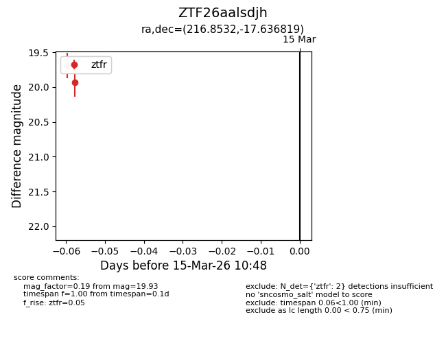
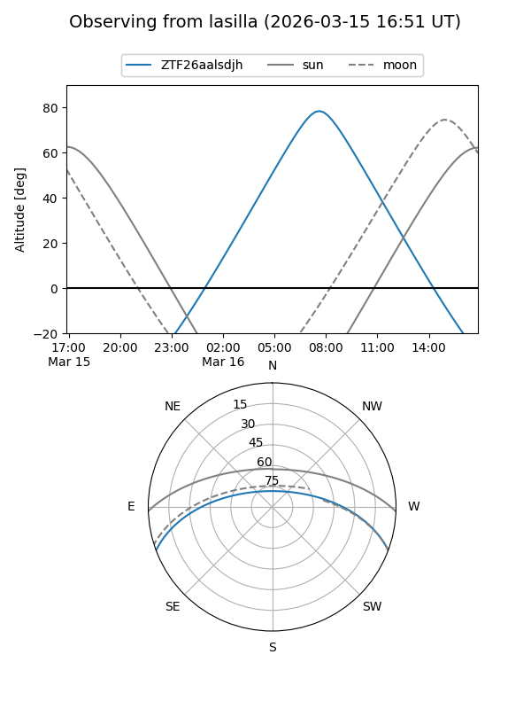
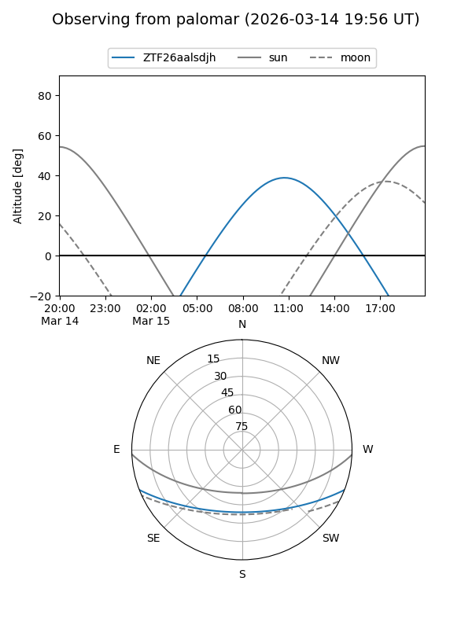

ZTF26aalsdjh
Target ZTF26aalsdjh at 2026-03-15 10:50
Aliases and brokers:
FINK: link
Lasair: link
ALeRCE: link
alt names
ZTF26aalsdjh (ztf,fink_ztf)
Coordinates:
equatorial (ra, dec) = 216.8532,-17.63682
equatorial (HMS+DMS) = 14:27:24.76,-17:38:12.55
galactic (l, b) = (333.1012,+39.54702)
Flags:
Photometry:
last ztfr=19.93
2 ztfr detections
Lightcurve

Visibility


Additional plots